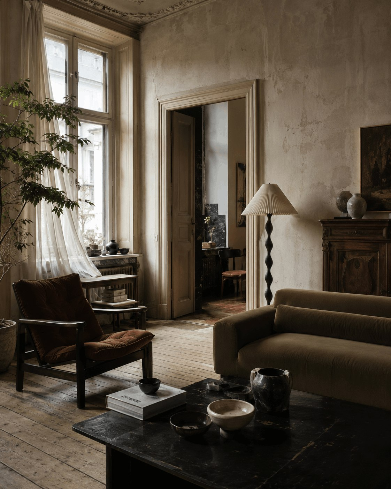

Home · Kitchens
The Most Beautiful Kitchen Colour Combinations Right Now
Ten refined palettes that bring depth, warmth and character to cabinetry, stone, timber and architectural details.
FORO Home
Interiors, architecture, objects and ideas for homes that feel considered, personal and quietly inspiring.

Latest stories
Interiors, architecture, colour and objects selected for character rather than trend alone.
Home · Kitchens
Ten refined palettes that bring depth, warmth and character to cabinetry, stone, timber and architectural details.

The point of view
FORO Home will cover interiors with character, useful design, architecture, gardens, unusual details and objects worth keeping. No filler stories have been published just to make the site look full.
Coverage